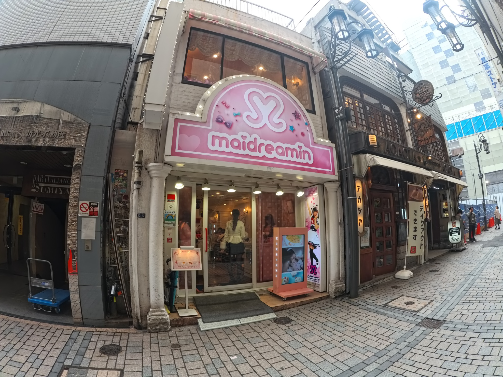
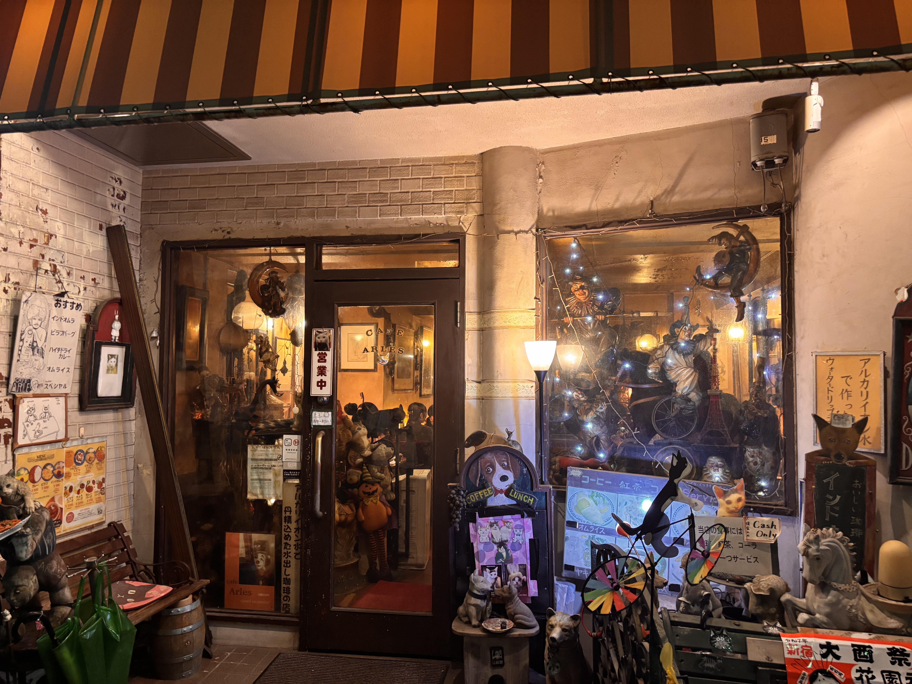

ただいま、MM星は新宿を中心に、地球のあらゆる情報を収集中です。あなたの地球探索の記録を、ピンとして地図に追加することで、宇宙に向けて報告することができます。
この情報提供により、MM星人との「好感度」が上がっていきます。好感度が高まると、後で思わぬ展開がある…かもしれません 👀

新宿という地球の都市にて、ストレス現象が発生した場合── 我々は「夢の国」と称される特殊拠点への帰還を推奨する🛸 その名も、めいどりーみん新宿東口店。 入口では、地球種族 "メイド" が 「おかえりなさいませ♡」と発声しつつ 友好的な笑顔で迎え入れてくる。 内部では、視覚刺激に満ちたキラキラの魔法ショーが展開。 摂取すると幸福度が跳ね上がる"ご褒美メニュー"なるものも存在。 これは確実に士気向上効果あり。 地球の日常と呼ばれるストレス源を一時忘却し、 脳がとろけるようなリラックス体験を共有可能✨ ──調査結果：中毒性があり非常に危険だが、行く価値あり。🛸💗

新地球調査員として、この猫カフェを視察しに来た。 店内には猫が2匹、地球人たちもおしゃれに本を読んだり静かに会話したりしていて、高文化エリアのようだった。 しかし——店内で最も多い生命体は、まさかのゴキブリ。 猫より多い。動きはMM星の小型偵察機レベル。
総合おすすめ度：おすすめしません。
香りで昇天、辛さで触手が震える——火星まで届く旨辛信号！
地球の食べ物は優しい味だと思っていたのに、麻辣烫を一口で触手が辛さ警報を発動。 花椒のシビレは宇宙通信レベル、辣油の香りは銀河を満たす勢い。辛いのに、香りがあまりに魅力的で箸が止まらない……！
地球人：超おすすめ！香りで無限ループ。 宇宙人：必ず「微辣」から。でないと、そのまま宇宙まで飛んでいくかもしれません。